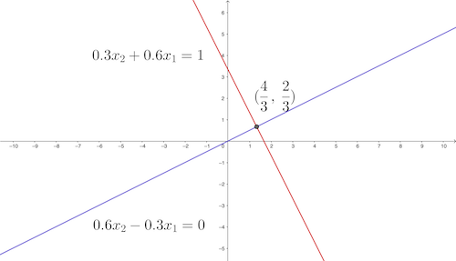
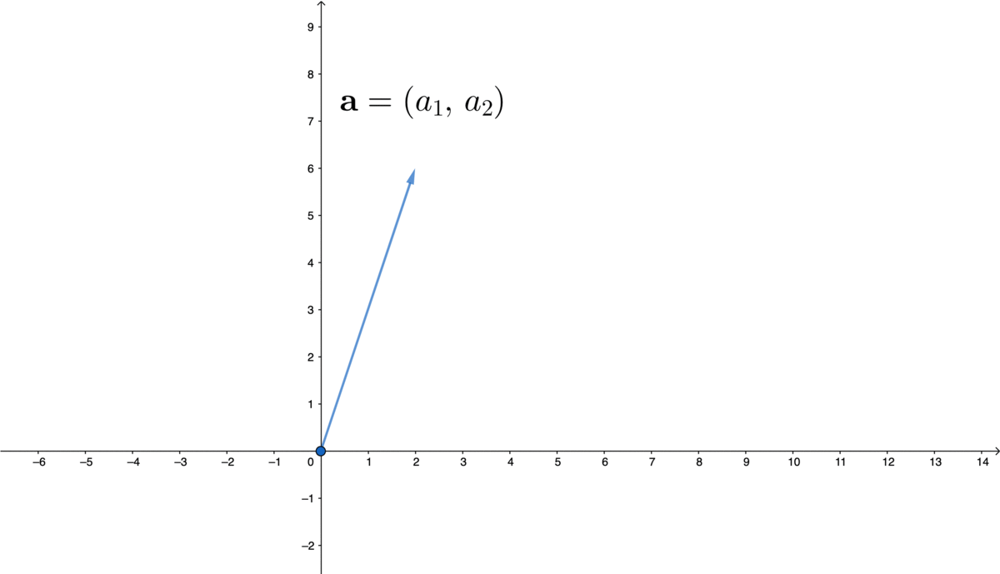
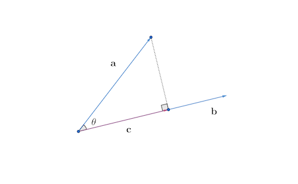
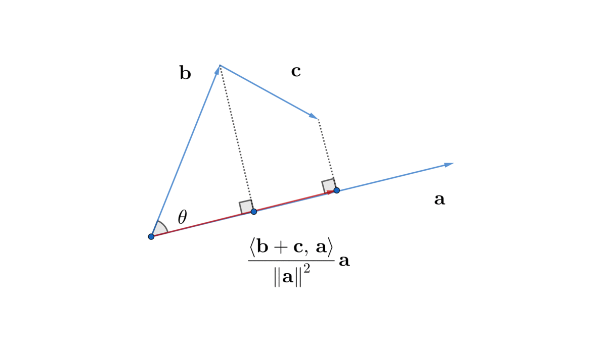
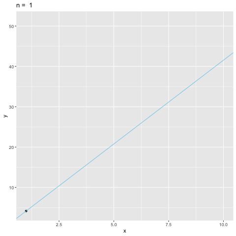
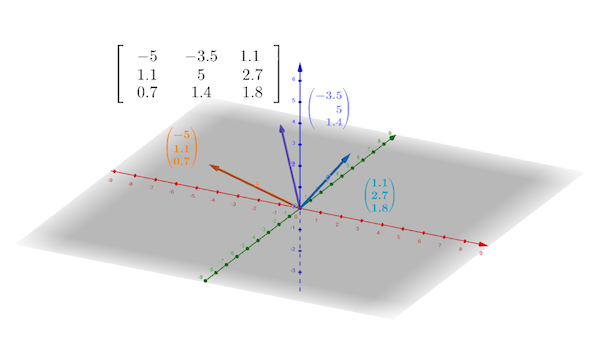
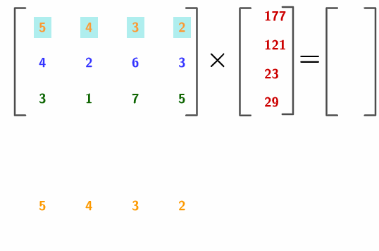
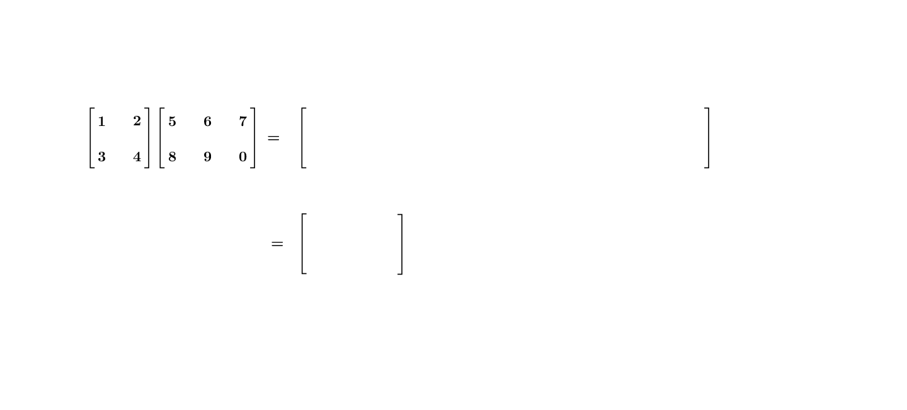

10 Vector and Matrix
We don’t add an apple to orange because they are different fruits. Similarly, the values of two different unknowns \(x_{1}\) and \(x_{2}\) from a linear system \[\begin{equation} \begin{cases} 0.3x_{2}+0.6x_{1} & =1,\\ 0.6x_{2}-0.3x_{1} & =0. \end{cases} \tag{10.1} \end{equation}\] should be treated separately as we did it for the ordered list \((x_{1},x_{2})\in\mathbb{R}^{2}\). The solution \((4/3,\,2/3)\) can be viewed as the point on the plane where two equations intersect (figure 10.1). The notation of \((x_{1},x_{2})\) is free to express any point on the plane. The introduction of a great workable literal symbolism was a significant advance in mathematics. Descartes illustrated his entire scheme of geometry on the Cartesian system of coordinates. This illustration connected algebra to classical geometry.
Figure 10.1: System of two equations
However, the geometrical approach becomes impractical when the linear system includes more than three knowns. Graphing in four (or more) dimensions on a flat sheet of paper does not lead to accurate answers. But Descartes’ achievement inspired Leibniz’s dream of symbolism for all of the human thought, in which all arguments about truth or falsehood could be resolved by the computations of symbols. Leibniz argued that such symbolism would relieve the imagination.
To initiate our journey to the imaginary world of symbols, let’s take a closer look at the system (10.1). The useful information of this system is stored by the coefficients on the left-hand side of the equality and by the output values on the right-hand side. The following two tables can compactly list all the necessary information: \[\left[\begin{array}{cc} 0.3 & 0.6\\ 0.6 & -0.3 \end{array}\right],\:\left[\begin{array}{c} 1\\ 0 \end{array}\right].\] There is no need to write out all the equal signs or plus signs. These rectangular tables of numbers are handy in representing the system of equations. The first rectangular table of numbers represents a symbol called the matrix, and the second represents a symbol called the vector. They are the primary objects for studying a general linear system with an arbitrary number of unknowns. By relieving our imagination, we can reduce high-dimensional thought processes to some easily mastered manipulations of symbols.
10.1 Vector
Figure 10.2: Vector
If we look at the point \((a_{1},a_{2})\in \mathbb{R}^{2}\) of the plane in figure 10.2, there is a line going from the origin to it. Two characteristics of this point, its length and its direction, have been automatically stored in this ordered list. If we scale this line by \(c\), then the point will move to \((ca_{1},ca_{2})\); and if we add another \((b_{1},b_{2})\) to this point, there will be a new ordered list \((a_{1}+b_{1},\, a_{2}+b_{2})\).151 The order does not matter for the addition as \((a_{1}+b_{1},\, a_{2}+b_{2})\) and \((b_{1}+a_{1},\, b_{2}+a_{2})\) are the same.
Let’s relieve our imagination to an ordered list of \(n\) elements. Even it is hard to imagine what is an \(n\)-dimensional space, we may imagine that the direction, length, simple operations such as addition and scalar multiplication should hold as those in \(\mathbb{R}^{2}\). Let’s formally call this \(n\)-dimensional ordered list a vector. Usually, a vector is expressed in a lower-case boldface letter; for displaying the entries or elements of a vector, one can use an vertical array (column vector) surrounded by square (or curved) brackets: \[\mathbf{a}=\left[\begin{array}{c} a_{1}\\ \vdots\\ a_{n} \end{array}\right],\;\mathbf{b}=\left[\begin{array}{c} b_{1}\\ \vdots\\ b_{n} \end{array}\right],\quad\mathbf{a}+\mathbf{b}=\left[\begin{array}{c} a_{1}+b_{1}\\ \vdots\\ a_{n}+b_{n} \end{array}\right],\; c\mathbf{a}=\left[\begin{array}{c} c\times a_{1}\\ \vdots\\ c\times a_{n} \end{array}\right].\]
Like the addition of 2D order lists, when we add one vector to another vector, the addition should take into account the order of the entires of these vectors. Each entry or component of the vector is called the scalar. when we scale the vector by some scalar \(c\), this scalar should multiple all components of the vector. The vector \(\mathbf{a}\in \mathbb{R}^n\) is of size \(n\), and it is called the \(n\)-vector. Two equivalent vectors \(\mathbf{a}\) and \(\mathbf{b}\), namely \(\mathbf{a}=\mathbf{b}\), implies that they have the same size and the same corresponding entries.
The arithmetic axioms or the algebra axioms of vectors are similar to those rules of real numbers. Suppose that \(\mathbf{a}\), \(\mathbf{b}\), and \(\mathbf{c}\) are \(n\)-vectors, namely being of the same size, and suppose that \(k\) and \(l\) are scalars, the axioms can be summarized as follows:
- addition \(+\) (or called commutative group)152 The commutative group is a concept from abstract algebra. The commutative group generalizes the operations that perform similarly as the arithmetic of addition of integers. Here \(+\) operation stands for the operation defining the abstract commutative group rather than the simple addition of integers. That is, if we replace \(\mathbf{a}, \mathbf{b}\in\mathbb{R}^n\) with \(a, b\in\mathbb{Z}\), the axioms still hold. Moreover, if we use some other objects instead of vector \(\mathbf{a}, \mathbf{b}\), and if those objects are from a commutative group, they should also satisfy the axioms regarding this \(+\) operation.:
- commutativity : \(\mathbf{a}+\mathbf{b}=\mathbf{b}+\mathbf{a}\)
- associativity : \((\mathbf{a}+\mathbf{b})+\mathbf{c}=\mathbf{a}+(\mathbf{b}+\mathbf{c})\)
- existence of zero vector (existence of an identity element) : \(\mathbf{a}+\mathbf{0}=\mathbf{a}\)
- existence of negative vector (existence of inverse elements) : \(\mathbf{a}+(-\mathbf{a})=\mathbf{0}\)
- scalar multiplication \(\times\) (We often ignore the sign of scalar multiplication.):
- associativity : \(k(l\mathbf{a})=(k\times l)\mathbf{a}\)
-
multiplication of identity elements :
- one (identity element for multiplication) \(1\mathbf{a}=\mathbf{a}\),
- zero (identity element for addition)\(0\mathbf{a}=\mathbf{0}\),
- and zero vector (identity element for vector addition): \(k\mathbf{0}=\mathbf{0}\)
- distributivity for vectors and for scalars: \(k(\mathbf{a}+\mathbf{b})=k\mathbf{a}+k\mathbf{b}\), \((k+l)\mathbf{a}=k\mathbf{a}+l\mathbf{a}\)
These axioms (commutativity, associativty, negative vector) in 2D can be easily verified by figure 10.2. Note that zero vector \(\mathbb{R}^n\) is the origin in the \(n\)-dimension. Note that a standard unit vector is a vector with all zero elements except one unit element. For example, \[\mathbf{e}_{1}=\left[\begin{array}{c} 1\\ 0\\ 0 \end{array}\right],\:\mathbf{e}_{2}=\left[\begin{array}{c} 0\\ 1\\ 0 \end{array}\right],\:\mathbf{e}_{3}=\left[\begin{array}{c} 0\\ 0\\ 1 \end{array}\right]\] are the three standard unit vectors in \(\mathbb{R}^{3}\).
 Figure 10.3: Represent a 3D vector in a linear combination
Figure 10.3: Represent a 3D vector in a linear combination
A linear combination is formed by combining some additions and scalar multiplications of some vectors. Let \(\mathbf{x}_{1},\dots,\mathbf{x}_{m}\) be \(n\)-vectors, and let \(\beta_{1},\dots,\beta_{m}\) be scalars, then the \(n\)-vector \[\beta_{1}\mathbf{x}_{1}+\cdots+\beta_{m}\mathbf{x}_{m}\] is a linear combination of the vectors \(\mathbf{x}_{1},\dots,\mathbf{x}_{m}\). The scalars \(\beta_{1},\dots,\beta_{m}\) are the coefficients of this linear combination. We can write any \(n\)-vector \(\mathbf{x}\) as a linear combination of the standard unit vectors,\[\mathbf{x}=x_{1}\mathbf{e}_{1}+\cdots+x_{n}\mathbf{e}_{n}\] where \(x_{i}\) is the \(i\)-th entry of \(\mathbf{x}\), and \(\mathbf{e}_{i}\) is the \(i\)-th standard unit vector. A 3D illustration of the linear combination is given in figure 10.3.
An essential aspect we didn’t mention is about the multiplication or the product of two vectors. As any vector stores the relevant information of direction and length, the product should preserve the metric information, i.e., the measurement of the angles and the lengths of the vectors. The length of an \(n\)-vector \(\mathbf{x}\) is given by the Euclidean distance from the origin \[\mbox{d}(\mathbf{x},\mathbf{0})=\sqrt{x_{1}^{2}+\cdots+x_{n}^{2}}=\|\mathbf{x}\|\in\mathbb{R}\] where \(\|\cdot\|\) denotes a norm, a function that assigns a strictly positive length to a vector. The norm of the vector \(\mathbf{x}\) is equivalent to the \(l_{2}\)-distance function for \(\mathbf{x}\) and \(\mathbf{0}\), namely \(\mbox{d}(\mathbf{x},\mathbf{0})\). For zero vector, the length is also zero, thus \(\|\mathbf{0}\|=0\).
The product of two vectors is called the inner product, and can be defined as follows: \[\begin{equation} \langle\mathbf{a},\,\mathbf{b}\rangle=a_{1}b_{1}+\cdots+a_{n}b_{n}=\sum_{i=1}^{n}a_{i}b_{i}. \tag{10.2} \end{equation} \] On the other hand, one can also define the inner product by \[\begin{equation} \langle\mathbf{a},\,\mathbf{b}\rangle= \begin{cases} \|\mathbf{a}\|\|\mathbf{b}\|\cos\theta, & \mbox{ if }\mathbf{a},\mathbf{b}\neq0,\\ 0, & \mbox{ if }\mathbf{a}=0,\mbox{ or }\mathbf{b}=0, \end{cases} \tag{10.3} \end{equation} \] where \(\theta\) is the smallest angle between \(\mathbf{a}\) and \(\mathbf{b}\). These two definitions are equivalent.
Proof
Expression (10.2) to expression (10.3)
If either \(\mathbf{a}=0\) or \(\mathbf{b}=0\), then \(\sum_{i=1}^{n}a_{i}b_{i}=0\) and \(\|\mathbf{a}\|\|\mathbf{b}\|=0\). Thus two expressions give the same answer.
For a non-zero inner product, let’s first consider the case in \(\mathbb{R}^2\). Any vector satisfying \(\|\mathbf{x}\|=1\) is a unit vector (not necessarily being a standard unit vector). Note that the vector \(\mathbf{u}\) satisfying \[\mathbf{u}=\left[\begin{array}{c} \cos\theta\\ \sin\theta \end{array}\right],\:\|\mathbf{u}\|=\sqrt{\cos^{2}\theta+\sin^{2}\theta}=1\] is a unit vector. The unit vector \(\mathbf{u}\) and another unit vector \(\mathbf{u}'\) have the inner product of their angle differences \[\langle\mathbf{u},\,\mathbf{u}'\rangle=\cos\theta\times\cos\theta'+\sin\theta\times\sin\theta'=\cos(\theta-\theta')\] by the trigonometry formula.153 When \(\theta'=0\), the unit vector \(\mathbf{u}'\) is the standard unit vector \(\mathbf{e}_{1}\). Then \(\mathbf{u}\) and the standard unit vector \(\mathbf{e}_{1}\) has the inner product \[\langle\mathbf{u},\,\mathbf{e}_{1}\rangle=\cos\theta\times1+\sin\theta\times0=\cos\theta.\] Thus we can conclude that for any two unit vectors in \(\mathbb{R}^2\), the two definitions of the inner product are equivalent.
Now consider the general case in \(\mathbb{R}^n\). It is always true that \(\mathbf{a}/\|\mathbf{a}\|\) and \(\mathbf{b}/\|\mathbf{b}\|\) are unit vectors.154 Take \(\mathbf{a}/\|\mathbf{a}\|\) as an example. \[\begin{align*} \left\Vert \frac{\mathbf{a}}{\|\mathbf{a}\|}\right\Vert =&\sum_{i=1}^{n}\frac{1}{\|\mathbf{a}\|}\left(a_{1}^{2}+\cdots+a_{n}^{2}\right)\\ =&\frac{1}{\|\mathbf{a}\|}\sum_{i=1}^{n}\left(a_{1}^{2}+\cdots+a_{n}^{2}\right) \\= &\frac{1}{\|\mathbf{a}\|}\|\mathbf{a}\|=1. \end{align*}\] Transforming \(\mathbf{a}\) into \(\mathbf{a}/\|\mathbf{a}\|\) is called the normalization of the vector \(\mathbf{a}\). Therefore, trigonometry formula tells us \[\left\langle \frac{\mathbf{a}}{\|\mathbf{a}\|},\,\frac{\mathbf{b}}{\|\mathbf{b}\|}\right\rangle =\cos\theta\] which implies \(\langle\mathbf{a},\,\mathbf{b}\rangle=\|\mathbf{a}\|\|\mathbf{b}\|\cos\theta.\) The result follows.155 Note that \[\begin{align*}\left\langle \frac{\mathbf{a}}{\|\mathbf{a}\|},\,\frac{\mathbf{b}}{\|\mathbf{b}\|}\right\rangle =&\frac{1}{\|\mathbf{a}\|\|\mathbf{b}\|}\sum_{i=1}^{n}a_{i}b_{i}\\=&\frac{\langle\mathbf{a},\,\mathbf{b}\rangle}{\|\mathbf{a}\|\|\mathbf{b}\|}.\end{align*}\]
There is also an alternative way of expressing an inner product as a product of a row vector and a column vector. See ch[?].
Figure 10.4: Projection
The expression (10.3) can imply several important results. If \(\langle\mathbf{a},\,\mathbf{b}\rangle=0\) in equation (10.2) and $,$0, then the expression (10.3) says that \(\mathbf{a}\) and \(\mathbf{b}\) must be perpendicular (orthogonal to each other), namely \(\theta=90^{\circ}\). Also, since \(|\cos\theta|\) never exceeds one, expression (10.3) gives the following inequality \[\left|\frac{\langle\mathbf{a},\,\mathbf{b}\rangle}{\|\mathbf{a}\|\|\mathbf{b}\|}\right|\leq1,\;\mbox{ or say}\left|\langle\mathbf{a},\,\mathbf{b}\rangle\right|\leq\|\mathbf{a}\|\|\mathbf{b}\|,\] which is called Schwarz inequality. Because the norm \(\|\cdot\|\) is a distance function, it should also satisfy the triangular inequality \[\|\mathbf{a}+\mathbf{b}\|\leq\|\mathbf{a}\|+\|\mathbf{b}\|.\] Finally, by the expression (10.3), we can deduce a useful formula called the orthogonal projection formula. Consider a situation in which one vector \(\mathbf{a}\) shall be projected orthogonally onto another vector \(\mathbf{b}\) in order to create a new vector \(\mathbf{c}\). Since \(\mathbf{a}\) and \(\mathbf{c}\) make up a triangle with a right angle (see figure 10.4), by the definition of cosine function, we have \(\cos\theta=\|\mathbf{c}\|/\|\mathbf{a}\|\) or \(\|\mathbf{c}\|=\cos\theta\|\mathbf{a}\|\). Then by normalizing \(\mathbf{b}\) and \(\mathbf{c}\), we have \(\mathbf{c}/\|\mathbf{c}\|=\mathbf{b}/\|\mathbf{b}\|\), and hence \[\mathbf{c}=\|\mathbf{c}\|\frac{\mathbf{b}}{\|\mathbf{b}\|}=\|\mathbf{a}\|\cos\theta\frac{\mathbf{b}}{\|\mathbf{b}\|}.\] By the definition of inner product (expression (10.3)), we have \[ \begin{equation} \mathbf{c}=\|\mathbf{a}\|\|\mathbf{b}\|\cos\theta\frac{\mathbf{b}}{\|\mathbf{b}\|^{2}}=\frac{\langle\mathbf{a},\,\mathbf{b}\rangle}{\|\mathbf{b}\|^{2}}\mathbf{b}. \tag{10.4} \end{equation} \] The term \(\langle\mathbf{a},\,\mathbf{b}\rangle/\|\mathbf{b}\|^{2}\) gives the orthogonal projection of \(\mathbf{a}\) onto \(\mathbf{b}\).156 Note that \(\|\mathbf{b}\|^{2}=\langle\mathbf{b},\,\mathbf{b}\rangle\), one can also write the ** orthogonal projection** of \(\mathbf{a}\) onto \(\mathbf{b}\) as \[\frac{\langle\mathbf{a},\,\mathbf{b}\rangle}{\langle\mathbf{b},\,\mathbf{b}\rangle}\mathbf{b}\].
With the projection formula (10.4), we can deduce the following rules (axioms).
- Rules of inner product \(\langle\cdot,\,\cdot\rangle\) for \(\mathbf{a},\mathbf{b}\in\mathbb{R}^{n}\) and \(k\in\mathbb{R}\):
- Commutativity : \(\langle\mathbf{a},\,\mathbf{b}\rangle=\langle\mathbf{b},\,\mathbf{a}\rangle\)
- Associativity : \(k\langle\mathbf{a},\,\mathbf{b}\rangle=\langle k\mathbf{a},\,\mathbf{b}\rangle=\langle\mathbf{a},\, k\mathbf{b}\rangle\)
- Distributivity : \(\langle\mathbf{a},\,\mathbf{b}+\mathbf{c}\rangle=\langle\mathbf{a},\,\mathbf{b}\rangle+\langle\mathbf{a},\,\mathbf{c}\rangle\)
Proof
Figure 10.5: Distributivity
Commutativity and associativity come directly from the definition (10.2) and (10.3). To see distributivity, we need to see that the sum of the projections is equal to the projection of the sum, (figure 10.5). It means\[\frac{\langle\mathbf{b}+\mathbf{c},\,\mathbf{a}\rangle}{\|\mathbf{a}\|^{2}}\mathbf{a}=\frac{\langle\mathbf{b},\,\mathbf{a}\rangle}{\|\mathbf{a}\|^{2}}\mathbf{a}+\frac{\langle\mathbf{c},\,\mathbf{a}\rangle}{\|\mathbf{a}\|^{2}}\mathbf{a}.\] We only need to focus on the coefficients of this equality. By canceling out \(\|\mathbf{a}\|^{2}\) on the both sides, we have \[\langle\mathbf{b}+\mathbf{c},\,\mathbf{a}\rangle=\langle\mathbf{b},\,\mathbf{a}\rangle+\langle\mathbf{c},\,\mathbf{a}\rangle.\] Then interchanging the positions of \(\mathbf{a}\) by the commutativity rule gives the desired result.
As the expression (10.2) defines a Euclidean distance for two \(n\)-vectors \(\mathbf{a}\) and \(\mathbf{b}\), the inner product is a particular type of distance. Note that the five axioms of distance functions do not include everything that can be said about distance in our common sense of geometry. Pythagoras’ theorem, for instance, cannot be deduced from those five axioms but it can be deduced by the rules of inner product. If \(\mathbf{a}\) and \(\mathbf{b}\) are orthogonal to each other, then \[\|\mathbf{a}+\mathbf{b}\|^{2}=\|\mathbf{a}\|^{2}+\|\mathbf{b}\|^{2}\] gives a generalized Pythagoras’ theorem.157 \[ \begin{align*} \|\mathbf{a}+\mathbf{b}\|^{2}&= \langle\mathbf{a}+\mathbf{b},\,\mathbf{a}+\mathbf{b}\rangle\\ &\overset{(a)}{=} \langle\mathbf{a},\,\mathbf{a}+\mathbf{b}\rangle+\langle\mathbf{b},\,\mathbf{a}+\mathbf{b}\rangle\\ &\overset{(b)}{=} \langle\mathbf{a},\,\mathbf{a}\rangle+\langle\mathbf{a},\,\mathbf{b}\rangle+\langle\mathbf{b},\,\mathbf{a}\rangle+\langle\mathbf{b},\,\mathbf{b}\rangle\\ &= \|\mathbf{a}\|^{2}+\|\mathbf{b}\|^{2}+2\langle\mathbf{a},\,\mathbf{b}\rangle\\ &\overset{(c)}{=}\|\mathbf{a}\|^{2}+\|\mathbf{b}\|^{2} \end{align*} \] where \(\overset{(a)}{=}\) and \(\overset{(b)}{=}\) use the distributive rule, \(\overset{(c)}{=}\) use the orthogonality \(\langle\mathbf{a},\,\mathbf{b}\rangle=0\). In this sense, the definition of inner product (expression (10.3)) actually specifies the projective geometry properties of vectors.
10.2 Example: Linearity
Vectors establish the basic objects in the numerical computation. Consider a function \(f:\mathbb{R}^{n}\mapsto\mathbb{R}\). We can model this function by saying that it maps from real \(n\)-vectors to real numbers such as \(f(\mathbf{x})=f(x_{1},\dots,x_{n})\). And the inner product is such a function:\[f(\mathbf{x})=\langle\mathbf{b},\,\mathbf{x}\rangle=b_{1}x_{1}+\cdots+b_{n}x_{n}\] where \(b_{1},\dots,b_{n}\) are the coefficients. The inner product can uniquely represent a class of functions called linear functions. The linear function is one of the most fundamental functions. For example, in economics, the total income or the total expenses can be expressed by an inner product of quantities and prices of \(n\) items.
A function \(f\) is linear or superposition if \[f(\alpha x+\beta y)=\alpha f(x)+\beta f(y)\] for scalars \(\alpha\) and \(\beta\). The property \(f(\alpha x)=\alpha f(x)\) is called the homogeneity, and the property \(f(x+y)=f(x)+f(y)\) is called the additivity.158 We can easily find that if the linear function is an inner product, then the aditivity and homogeneity are respectively corresponding to the rules of addition and scalar multiplication of vectors. Combining homogenity and additivity gives the superposition. For any function \(f:\mathbb{R}^{n}\mapsto\mathbb{R}\), if \(f\) is linear, then \(f\) can be uniquely represented by an inner product of its argument \(\mathbf{x}\in\mathbb{R}^{n}\) with some fixed vector \(\mathbf{b}\in\mathbb{R}^{n}\), namely \(f(\mathbf{x})=\langle\mathbf{b},\,\mathbf{x}\rangle\).
Proof
Multi-valued function
The vector also allows us to study some function mapping to higher dimensions \(\mathbf{f}:\mathbb{R}\mapsto\mathbb{R}^{n}\). For example, the dynamical 3D spiral in figure 4.6 is such a function \[\mathbf{f}(t)=\left[\begin{array}{c} f_{1}(t)\\ f_{2}(t)\\ f_{3}(t) \end{array}\right]=\left[\begin{array}{c} \mbox{e}^{t}\cos t,\\ \mbox{e}^{t}\sin t\\ t \end{array}\right].\] The continuity for \(\mathbf{f}:\mathbb{R}\mapsto\mathbb{R}^{n}\) should take into account the continuity in each dimension, namely the continuity of every \(f_{i}(x)\) in the vector \(\mathbf{f}(x)\). The limit \(\lim_{x\rightarrow a}\mathbf{f}(x)\) does not exists if and only if there is a sequence \(x_{n}\rightarrow a\) such that \(\mathbf{f}(x_{n})\) does not converge. The function \(\mathbf{f}(x)\) is continuous at a point \(a\) if \(\lim_{x\rightarrow a}\mathbf{f}(x)=\mathbf{f}(a)\).
Gradient
With the properties of function values in \(\mathbb{R}^n\), let’s consider a special mapping from \(\mathbb{R}^{n}\) to \(\mathbb{R}^{n}\) which is called the gradient. Consider a differentiable function \(f:\mathbb{R}^{n}\mapsto\mathbb{R}\), the gradient of \(f\) is an \(n\)-vector \[\nabla f(\mathbf{z})=\left[\begin{array}{c} \left.\frac{\partial f}{\partial x_{1}}(\mathbf{x})\right|_{\mathbf{x}=\mathbf{z}}\\ \vdots\\ \left.\frac{\partial f}{\partial x_{n}}(\mathbf{x})\right|_{\mathbf{x}=\mathbf{z}} \end{array}\right]\] where \(\partial f/\partial x_{i}\) is the partial derivative \[\frac{\partial f}{\partial x_{i}}(\mathbf{x})=\lim_{\epsilon\rightarrow0}\frac{f(x_{1},\dots,x_{i}+\epsilon,\dots x_{n})-f(\mathbf{x})}{\epsilon}.\] We can linearize a nonlinear (vector) function \(f:\mathbb{R}^{n}\mapsto\mathbb{R}\) by Taylor series such thatf \[(\mathbf{x})\approx f(\mathbf{z})+\left\langle \nabla f(\mathbf{z}),\,(\mathbf{x}-\mathbf{z})\right\rangle.\] The first term in the Taylor series is a constant vector \(f(\mathbf{z})\), the second term is the inner product of the gradient of \(f\) at \(\mathbf{z}\) and the difference between \(\mathbf{x}\) and \(\mathbf{z}\). This first order Taylor expansion is a linear function \(\left\langle \nabla f(\mathbf{z}),\,(\mathbf{x}-\mathbf{z})\right\rangle\) plus a constant vector \(f(\mathbf{z})\).159 A linear function \(\langle\mathbf{b},\,\mathbf{x}\rangle\) plus a constant vector \(\mathbf{a}\) is called an affine function \(f(\mathbf{x})=\langle\mathbf{b},\,\mathbf{x}\rangle+\mathbf{a}\). In many applied contexts affine functions are also called linear functions. However, in order to satisfy the superposition property, the argument \(\alpha x+\beta y\) should satisfy \(\alpha+\beta=1\). To see this, note that \[\begin{align*} f(\alpha\mathbf{x}+\beta\mathbf{y}) &= \langle\mathbf{b},\,\alpha\mathbf{x}+\beta\mathbf{y}\rangle+\mathbf{a}\\ &= \alpha\langle\mathbf{b},\,\mathbf{x}\rangle+\beta\langle\mathbf{b},\,\mathbf{y}\rangle+\mathbf{a}. \end{align*}\] Using the property \(\alpha+\beta=1\), the previous expression becomes \[\begin{align*} \alpha\langle\mathbf{b},\,\mathbf{x}\rangle+\beta\langle\mathbf{b},\,\mathbf{y}\rangle+&(\alpha+\beta)\mathbf{a} =\\ \alpha(\langle\mathbf{b},\,\mathbf{x}\rangle+\mathbf{a})+&\beta(\langle\mathbf{b},\,\mathbf{y}\rangle+\mathbf{a})= \alpha f(\mathbf{x})+\beta f(\mathbf{y}). \end{align*}\]
Fixed point of vectors
Let’s look at a vector version fixed point result. The previous system (10.1) can be rewritten as \[\begin{align*} \mathbf{x}=&\left[\begin{array}{c} x_{1}\\ x_{2} \end{array}\right] =\left[\begin{array}{c} 0.4x_{1}-0.3x_{2}+1\\ 0.3x_{1}+0.4x_{2} \end{array}\right]\\ &=\left[\begin{array}{c} 1\\ 0 \end{array}\right] +\left[\begin{array}{c} g_{1}(\mathbf{x})\\ g_{2}(\mathbf{x}) \end{array}\right]=\mathbf{d}+\mathbf{g}(\mathbf{x})=\mathbf{f}(\mathbf{x}) \end{align*}\] where \(\mathbf{g}:\mathbb{R}^{2}\mapsto\mathbb{R}^{2}\) is a linear function (both \(g_{1}\) and \(g_{2}\) are linear), and \(\mathbf{f}:\mathbb{R}^{2}\mapsto\mathbb{R}^{2}\) is an affine function. The following simple code shows that the system reach the point around \(x_{1}=4/3\) and \(x_{2}=2/3\), namely the solution vector of the linear system.
x1 = 0; x2 = 0;
for (iter in 1:10){
x1 = 0.4*x1 - 0.3*x2 + 1 ;
x2 = 0.3*x1 + 0.4*x2;
cat("At iteration", iter, "x1 is:", x1, "x2 is:", x2, "\n")
}## At iteration 1 x1 is: 1 x2 is: 0.3
## At iteration 2 x1 is: 1.31 x2 is: 0.513
## At iteration 3 x1 is: 1.3701 x2 is: 0.61623
## At iteration 4 x1 is: 1.363171 x2 is: 0.6554433
## At iteration 5 x1 is: 1.348635 x2 is: 0.6667679
## At iteration 6 x1 is: 1.339424 x2 is: 0.6685343
## At iteration 7 x1 is: 1.335209 x2 is: 0.6679765
## At iteration 8 x1 is: 1.333691 x2 is: 0.6672978
## At iteration 9 x1 is: 1.333287 x2 is: 0.6669052
## At iteration 10 x1 is: 1.333243 x2 is: 0.666735From the result table, we can see that the Lipschitz continuity is satisfied for this affine function. \[\|\mathbf{f}(\mathbf{x})-\mathbf{f}(\mathbf{x}')\|\leq\|\mathbf{x}-\mathbf{x}'\|.\] The sequence is a Cauchy sequence.
For a general case, let the fixed point of the system of two equations \(x_1=g_{1}(x_1,x_2),\; x_2=g_{2}(x_1,x_2)\) be \((x_1^{*},x_2^{*})\) such that \(x_1^{*}=g_{1}(x_1^{*},x_2^{*})\) and \(x_2^{*}=g_{2}(x_1^{*},x_2^{*})\). The fixed-point iteration is \[x_1^{(k+1)}=g_{1}(x_1^{(k)},x_2^{(k)}),\; x_2^{(k+1)}=g_{2}(x_1^{(k)},x_2^{(k)}).\] Their paritial derivatives are continuous on a region that contains the fixed point \((x_1^{*},x_2^{*})\). If \((x_1,x_2)\) is sufficiently close to \((x_1^{*},x_2^{*})\) and if \[\left|\frac{\partial g_{i}}{\partial x_1}(x_1^{*},x_2^{*})\right|+\left|\frac{\partial g_{i}}{\partial x_2}(x_1^{*},x_2^{*})\right|<1\] for \(i=1,2\), then the iteration converges stably to \((x_1^{*},x_2^{*})\).160 Otherwise, the iteration might diverge. This will usually be the case if the sum of the magnitudes of the partial derivatives is much larger than \(1\). See chapter 8.4 for the discussion about stability of fixed point algorithms.
Linear regression
Very often, besides the input and the output, the system is also characterized by the parameters. To be precise, we recall the notion of the regression \(g(X)=\mathbb{E}[Y|X]\) a conditional expectation with the output \(Y\) and the (conditional) input \(X\). If we let \(Y\) be a linear function with some additive i.i.d. random variable \(\varepsilon\) and a parameter \(\beta\) as the coefficient of the linear function such that \[Y=\beta X+\varepsilon,\] then the regression is a linear regression, or say \(g(X)=\beta X\) as \(\mathbb{E}[\varepsilon|X]=0\) for i.i.d. random variable.
When the parameter \(\beta\) is unknown, so we need to estimate the value of \(\beta\) through a sequence of observations of \(X\) and \(Y\). That is, we want to determine the model parameters that produce the observable data \(\mathbf{y}\) we have recorded. This problem is known as the estimation problem: one looks for the model parameter that presumably generates the data. In data analysis, the observations (realizations) of one random variable \(X\) are stored by an array, namely a data vector.
Figure 10.6: Least square estimate
The table displays ten observations for \(X\) and \(Y\). These are \(10\)-vector \(\mathbf{x}\) and \(10\)-vector \(\mathbf{y}\). These vectors are generated by a Monte Carlo simulation. The parameter recovery simulations have frequently been used to assess the accuracy of the estimation. We assume that a model accurately captures the processes that generate data, and fit the model to the data so as to draw conclusions from its parameter estimates.
A very commonly used estimation method for linear regression models is the least square method. The name of least square comes from the fact that the method minimizes the (square of the) error \(\mathbf{y} - \beta \mathbf{x}\) by tuning the value of \(\beta\). The unique value of \(\beta\) should match the data better than the others.
We will come back to the minimization point of least square in Ch[?]. At the moment, we can find the best \(\beta\) from the geometric point of view. The preassumbly relation between \(X\) and \(Y\) is linear, so scaling the vector \(\mathbf{x}\) by \(\beta\) unit was supposed to get the vector \(\mathbf{y}\). Due to the contaminations (added by normal random variable \(\mathcal{N}(0,4)\)), the vector \(\mathbf{y}\) does not stay with \(\mathbf{x}\) at the same plane. We know that when two points \(\mathbf{y}\) and \(\mathbf{x}\) are on different planes, the nearest point to \(\mathbf{y}\) is the projection of \(\mathbf{x}\) onto the plane of \(\mathbf{y}\). The value of \(\beta\) comes with such a projection is the least square estimator, denoted by \(\hat{\beta}\). In other words, we can estimate the parameter \(\beta\) by projecting \(\mathbf{y}\) onto the plane of \(\mathbf{x}\). By the projection formula (10.4), we can deduce the estimator\[\hat{\beta}=\frac{\langle\mathbf{x},\,\mathbf{y}\rangle}{\langle\mathbf{x},\,\mathbf{x}\rangle}\] and the estimated output (the projected output) \(\hat{\beta}\mathbf{x}\). The difference between \(\mathbf{y}\) and \(\hat{\beta}\mathbf{x}\) is called the residual. The residual measures the discrepancy between the data and the estimated model. For any given input \(x\), one can also predict the output through \(\hat{\beta}x\).
## [1] 5.02727210.3 Matrix
A matrix is a rectangular array, with rows and columns, of numbers.161 Strictly speaking, it is a rectangular array of numbers of a field, see Ch[?]. If a matrix has \(m\) rows and \(n\) columns, then the size of the matrix is said to be \(m\times n\) (read \(m\) by \(n\)). We use a boldface capital letter, e.g. \(\mathbf{A}\), to denote a matrix. We write\[\mathbf{A}=[a_{ij}]_{m\times n}\;\mbox{for }1\leq i\leq m,\:1\leq j\leq n,\] where \(a_{ij}\) is the entry in location \((i,j)\), namely stored in the \(i\)-th row and \(j\)-th column of the matrix. In the expanded form, we write\[\mathbf{A}=\left[\begin{array}{ccccc} a_{11} & \cdots & a_{1j} & \cdots & a_{1n}\\ a_{21} & \cdots & a_{2j} & \cdots & a_{2n}\\ \vdots & & & & \vdots\\ a_{i1} & \cdots & a_{ij} & \cdots & a_{in}\\ \vdots & & & & \vdots\\ a_{m1} & \cdots & a_{mj} & \cdots & a_{mn} \end{array}\right].\] As you can see, each column of the \(m\times n\) matrix \(\mathbf{A}\) is an \(m\)-vector \(\mathbf{a}_{j}\) for \(j=1,\dots n\). We can express the matrix as \[\mathbf{A}=[\mathbf{a}_{1},\dots,\mathbf{a}_{n}],\] which is an \(n\)-row vector with \(m\) column vectorss as entries. If \(m=1\), then the \(1\times n\) matrix is a row vector; if \(n=1\), then this \(m\times1\) matrix is a (column) vector. If \(m=n\), the matrix is called a squared matrix of order \(n\). In figure 10.7, we can see that a \(3\times3\) matrix is constructed by three 3-vectors.
Figure 10.7: Matrix and vectors
Any vector, either a row or a column, can be transposed, which means that a row vector turns into a column vector, and vice versa. Sometimes we define the vector by writing out its elements in the text as a row vector, then using the transpose operator to turn it into a standard column vector, e.g. \(\mathbf{a}=[a_{1},a_{2},a_{3}]^{\top}\). For an \(m\)-columns vector \(\mathbf{a}\), its transposed vector is an \(m\)-rows vector, denoted by \(\mathbf{a}^{\top}=[a_{1},\dots,a_{m}\).] The order of the vector components is preserved. we can transpose a vector twice, and get back the same vector, i.e., \((\mathbf{a}^{\top})^{\top}=\mathbf{a}\).
With the transpose operation, we can express the inner product \(\langle\mathbf{a},\,\mathbf{b}\rangle\) as the product of \(\mathbf{a}^{\top}\) and \(\mathbf{b}\), such that \[\langle\mathbf{a},\,\mathbf{b}\rangle=\mathbf{a}^{\top}\mathbf{b}=[a_{1},\dots a_{m}]\left[\begin{array}{c} b_{1}\\ \vdots\\ b_{m} \end{array}\right]=\sum_{i=1}^{m}a_{i}b_{i},\] a sum of component-wise multiplications, each \(i\)-th position of the row vector times the \(i\)-th position of the column vector. Note that for the vector \(\mathbf{a}=[a_{1},\dots,a_{m}]^{\top}\), and \(\mathbf{b}^{\top}=[b_{1},\dots,b_{m}]\), \(\mathbf{a}\mathbf{b}^{\top}\) is not a number but a matrix \(\mathbf{C}=[a_{i}b_{j}]_{ij}\).162 In quantum mechanics, it is common to write the inner product \(\langle\mathbf{a},\,\mathbf{b}\rangle\) as \(\langle\mathbf{a}\,|\,\mathbf{b}\rangle\), and write \(\mathbf{a}\mathbf{b}^{\top}\) as \(|\mathbf{a}\rangle\,\langle\mathbf{b}|\) which is called the outer product. The vector \(\mathbf{a}\) is denoted by \(|\mathbf{a}\rangle\), and its transport \(\mathbf{a}^{\top}\) is denoted by \(\langle\mathbf{a}\,|\).
A matrix can also be transposed. The transpose of a matrix is the mirror image of the matrix across the diagonal line. The transpose of an \(m\times n\) matrix \(\mathbf{A}=[a_{ij}]_{m\times n}\) is denoted by \(\mathbf{A}^{\top}=[a_{ji}]_{n\times m}\), i.e.\[\left[\begin{array}{cc} 1 & 2\\ 3 & 4\\ 5 & 6 \end{array}\right]^{\top}=\left[\begin{array}{ccc} 1 & 3 & 5\\ 2 & 4 & 6 \end{array}\right].\] We make the columns of \(\mathbf{A}\) into rows in \(\mathbf{A}^{\top}\) (or rows of \(\mathbf{A}\) into columns in \(\mathbf{A}^{\top}\)).
Let \(\mathbf{A}=[a_{ij}]_{m\times n}\) and \(\mathbf{B}=[b_{ij}]_{m\times n}\) be the matrices of the same size. Then the sum of the matrices, denoted by \(\mathbf{A}+\mathbf{B}\), results another \(m\times n\) matrix: \[\mathbf{A}+\mathbf{B}=\left[\begin{array}{ccc} a_{11}+b_{11} & \cdots & a_{1n}+b_{1n}\\ \vdots & \cdots & \vdots\\ a_{m1}+b_{m1} & \cdots & a_{mn}+b_{mn} \end{array}\right]=[a_{ij}+b_{ij}]_{m\times n}.\] The negative of the matrix \(\mathbf{A}\), denoted by \(-\mathbf{A}\) is \(-\mathbf{A}=[-a_{ij}]_{m\times n}\). Thus the difference of \(\mathbf{A}\) and \(\mathbf{B}\) is \(\mathbf{A}-\mathbf{B}=[a_{ij}-b_{ij}]_{m\times n}\). Notice that both matrices and vectors must be the same size before we attempt to add them. The product of a scalar \(c\) with the matrix \(\mathbf{A}\) is \(c\mathbf{A}=[ca_{ij}]_{m\times n}\). Because the matrix is simply constructed by vectors, the algebraic axioms of the vector, namely addition and scalar mutiplication, also work for the matrix.163 Addition: (commutativity) \(\mathbf{A}+\mathbf{B}=\mathbf{B}+\mathbf{A}\), (associativity) \(\mathbf{A}+(\mathbf{B}+\mathbf{C})=(\mathbf{A}+\mathbf{B})+\mathbf{C}\), (additive inverse) \(\mathbf{A}+(-1)\mathbf{A}=0\). Scalar multiplication: (associativity) \(k(l\mathbf{A})=(kl)\mathbf{A}\), (distributivity) \((k+l)\mathbf{A}=k\mathbf{A}+l\mathbf{A}\), \(k(\mathbf{A}+\mathbf{B})=k\mathbf{A}+k\mathbf{B}\).
While matrix multiplication by a scalar and matrix addition are rather straightforward, the matrix-matrix multiplication may not be so. It is better to consider first the matrix-vector multiplication.
Since any matrix can be expressed as a row vector of column vectors, and since the inner product rule also holds for both types of vectors, we can express the matrix-vector multiplication in terms of inner products. For an \(m\times n\) matrix \(\mathbf{A}=[\mathbf{a}_{1},\dots,\mathbf{a}_{n}]\) and an \(m\)-vector \(\mathbf{b}\), the inner product between \(\mathbf{b}\) and any \(\mathbf{a}_{j}\) for \(j=1,\dots n\) follows the previous definition such that \(\langle\mathbf{b},\,\mathbf{a}_{j}\rangle=\sum_{i=1}^{m}b_{i}a_{ij}\). As the matrix \(\mathbf{A}\) consists of \(n\) components of \(m\)-vector \(\mathbf{a}_{j}\), we need to have the component-wise inner products for all \(\mathbf{a}_{j}\). The result is a row \(n\)-vector \([\sum_{i=1}^{m}b_{i}a_{i1},\dots,\sum_{i=1}^{m}b_{i}a_{in}]\). We can write a compact expression using the transpose operation \[\mathbf{b}^{\top}\mathbf{A}=\left[\mathbf{b}^{\top}\mathbf{a}_{1},\dots,\mathbf{b}^{\top}\mathbf{a}_{n}\right].\] which reads “vector \(\mathbf{b}\) times matrix \(\mathbf{A}\).” For an \(n\)-vector \(\mathbf{x}\), the mutiplication results in\[\mathbf{A}\mathbf{x}=[\mathbf{a}_{1},\dots\mathbf{a}_{n}]\left[\begin{array}{c} x_{1}\\ \vdots\\ x_{n} \end{array}\right]=\mathbf{a}_{1}x_{1}+\cdots+\mathbf{a}_{n}x_{n}\]
which is a linear combination of \(\mathbf{a}_{j}\), \(j=1,\dots,n\). We read “matrix \(\mathbf{A}\) times vector \(\mathbf{x}\)”. Note that \(\mathbf{A}\mathbf{x}\) is a column \(m\)-vector while \(\mathbf{b}^{\top}\mathbf{A}\) is a row \(n\)-vector. As you can see, the inner product restricts the multiplication rule to the case of two vectors with an identical size.164 For \(\mathbf{x}\mathbf{A}\), the size of the row of \(\mathbf{A}\) has to equal to the size of \(\mathbf{x}\). For \(\mathbf{A}\mathbf{x}\), the size of the column of \(\mathbf{A}\) has to equal to the size of \(\mathbf{x}\). Figure 10.8 illustrates how to compute the multiplication of \(\mathbf{A}\mathbf{x}\) by using row-vectors of \(\mathbf{A}\), then calculating the inner products between the row-vectors and \(\mathbf{x}\).165 The numerical entries come from Nine Chapters on the Mathematical Art. In the chapter of the system of equations (Chapter 8), it gives 18 problems and one of them (problem 17 about the costs of sheep, a dog, a chick and a rabbit) can be expressed in this multiplication.
Figure 10.8: Illustration of the rule of matrix-vector multiplication
Matrix-vector notation can help us to simplify the operations for linear systems. Recall that a single linear equation \(2x_{1}-3x_{2}+4x_{3}=5\) can be expressed as an inner product: \[[2,-3,4]\left[\begin{array}{c} x_{1}\\ x_{2}\\ x_{3} \end{array}\right]=5.\] The linear system is a collection of linear equations. Consider the following system: \[\begin{equation} \begin{array}{cc} x_{1} & =y_{1},\\ -x_{1}+x_{2} & =y_{2},\\ -x_{2}+x_{3} & =y_{3}. \end{array} \tag{10.5} \end{equation}\] For three vectors \[\mathbf{a}_{1}=\left[\begin{array}{c} 1\\ -1\\ 0 \end{array}\right],\:\mathbf{a}_{2}=\left[\begin{array}{c} 0\\ 1\\ -1 \end{array}\right],\:\mathbf{a}_{3}=\left[\begin{array}{c} 0\\ 0\\ 1 \end{array}\right],\] their linear combinations \(x_{1}\mathbf{a}_{1}+x_{2}\mathbf{a}_{2}+x_{3}\mathbf{a}_{3}\) gives the system (10.5) \[x_{1}\left[\begin{array}{c} 1\\ -1\\ 0 \end{array}\right]+x_{2}\left[\begin{array}{c} 0\\ 1\\ -1 \end{array}\right],+x_{3}\left[\begin{array}{c} 0\\ 0\\ 1 \end{array}\right]=\left[\begin{array}{c} x_{1}\\ x_{2}-x_{1}\\ x_{3}-x_{2} \end{array}\right]=\mathbf{y}.\] We can rewrite this combination using the matrix \(\mathbf{A}\) whose columns are the vectors \(\mathbf{a}_{1}\), \(\mathbf{a}_{2}\), and \(\mathbf{a}_{3}\). The vector \(\mathbf{y}\) is the result of the mutiplication between matrix \(\mathbf{A}\) and vector \(\mathbf{x}\)166 Solving this system of equations is a simple calculation of inverting the matrix \(\mathbf{A}\) to have the solution \(\mathbf{x}=\mathbf{A}^{-1}\mathbf{y}\). We will discuss the matrix inversion in section [?].: \[\begin{align*} \mathbf{A}\mathbf{x}&=\underset{3\times3}{\underbrace{\left[\begin{array}{ccc} 1 & 0 & 0\\ -1 & 1 & 0\\ 0 & -1 & 1 \end{array}\right]}}\underset{3\times1}{\underbrace{\left[\begin{array}{c} x_{1}\\ x_{2}\\ x_{3} \end{array}\right]}}\\ &=\left[\mathbf{a}_{1},\mathbf{a}_{2},\mathbf{a}_{3}\right]\left[\begin{array}{c} x_{1}\\ x_{2}\\ x_{3} \end{array}\right]=x_{1}\mathbf{a}_{1}+x_{2}\mathbf{a}_{2}+x_{3}\mathbf{a}_{3}=\mathbf{y}.\end{align*}\]
Let \(\mathbf{A}\) be an \(m\times n\) matrix and \(\mathbf{B}\) be an \(n\times p\) matrix. The general matrix-matrix multiplication rule of \(\mathbf{A}\mathbf{B}\) can also be expressed in the inner product way: taking the inner product of each row of \(\mathbf{A}\) with each column of \(\mathbf{B}\). The product \(\mathbf{A}\mathbf{B}\) results an \(m\times p\) matrix:\[\underset{m\times n}{\underbrace{\mathbf{A}}}\underset{n\times p}{\underbrace{\mathbf{B}}}=\underset{m\times p}{\underbrace{\mathbf{C}}}\] where the entry \(c_{ij}\) of \(\mathbf{C}\) is the \(i\)-th row of \(\mathbf{A}\) multiplying the \(j\)-th column of \(\mathbf{B}\). The complete form of this matrix-matrix multiplication is as follows:\[\left[\begin{array}{ccc} a_{11} & \cdots & a_{1n}\\ \vdots & \cdots & \vdots\\ a_{m1} & \cdots & a_{mn} \end{array}\right]\left[\begin{array}{ccc} b_{11} & \cdots & b_{1n}\\ \vdots & \cdots & \vdots\\ b_{m1} & \cdots & b_{mn} \end{array}\right]=\left[\begin{array}{ccc} c_{11} & \cdots & c_{1p}\\ \vdots & \cdots & \vdots\\ c_{m1} & \cdots & c_{mp} \end{array}\right]\] where \([c_{ij}]_{m\times p}=[\sum_{k=1}^{n}a_{ik}b_{kj}]\). Figure 10.9 gives a specific example.
Figure 10.9: Matrix-matrix multiplication
Here are the laws of the matrix multiplication. Let \(\mathbf{A}=[a_{ij}]_{m\times n}\), \(\mathbf{B}=[b_{ij}]_{n\times p}\), \(\mathbf{C}=[c_{ij}]_{n\times p}\), \(\mathbf{D}=[d_{ij}]_{p\times q}\), and \(c\in\mathbb{R}\).
- Identity : \(\mathbf{A}\mathbf{I}_{n}=\mathbf{A}\) and \(\mathbf{I}_{m}\mathbf{A}=\mathbf{A}\), for the identity matrix \[\mathbf{I}_{k}=\left[\begin{array}{ccccc} 1 & 0 & \cdots & & 0\\ 0 & 1 & 0 & \cdots & 0\\ \vdots & & \ddots\\ 0 & \cdots & & 1 & 0\\ 0 & 0 & \cdots & 0 & 1 \end{array}\right]=[\delta_{ij}]_{k\times k}\] where \(\delta_{ij}=1\) if \(i=j\), and \(\delta_{ij}=0\) otherwise.
- Associativity : \((\mathbf{A}\mathbf{B})\mathbf{D}=\mathbf{A}(\mathbf{B}\mathbf{D})\).
- Associativity for scalar : \(c(\mathbf{A}\mathbf{B})=(c\mathbf{A})\mathbf{B}=\mathbf{A}(c\mathbf{B})\).
- Distributivity : \(\mathbf{A}(\mathbf{B}+\mathbf{C})=\mathbf{A}\mathbf{B}+\mathbf{A}\mathbf{C}\).
- Transpose rule : \((\mathbf{A}^{\top})^{\top}=\mathbf{A}\), \((\mathbf{A}\mathbf{B})^{\top}=\mathbf{B}^{\top}\mathbf{A}^{\top}\), \((\mathbf{B}+\mathbf{C})^{\top}=\mathbf{B}^{\top}+\mathbf{C}^{\top}\), \((c\mathbf{A})^{\top}=c\mathbf{A}^{\top}\).
Proof
Notice that you can only multiply two matrices \(\mathbf{A}\) and \(\mathbf{B}\) provided that their dimensions are compatible, which means the number of columns of \(\mathbf{A}\) equals the number of rows of \(\mathbf{B}\). Also, notice that the commutativity is broken for matrix multiplication in general. That is \(\mathbf{A}\mathbf{B}\neq\mathbf{B}\mathbf{A}\). In fact, \(\mathbf{B}\mathbf{A}\) may not even make sense because of incompatible sizes \(p\neq m\). Even when \(\mathbf{A}\mathbf{B}\) and \(\mathbf{B}\mathbf{A}\) both make sense and are the same size, we do not in general have the commutativity. Thus, for matrix multiplications, the order matters.167 The violation of the commutativity reveals a deeper root in the abstract layer. For an \(m\times n\) matrix \(\mathbf{A}\), the matrix-vector multiplication \(\mathbf{A}\mathbf{x}=\mathbf{y}\) product another \(m\)-vector \(\mathbf{y}\). So we can think of \(\mathbf{A}:\mathbb{R}^{n}\mapsto\mathbb{R}^{m}\) as a linear function (or mapping) from \(n\)-vector \(\mathbf{x}\) to \(m\)-vector \(\mathbf{y}\). That is, \(\mathbf{A}\mathbf{x}=f(\mathbf{x})\). Similarly, for another \(n\times p\) matrix \(\mathbf{B}\), \(\mathbf{B}:\mathbb{R}^{n}\mapsto\mathbb{R}^{p}\) is a linear function \(g(\cdot)\). The composition \(f\circ g=\mathbf{A}\mathbf{B}\) is generally not commutative, namely \(f\circ g\neq g\circ f\). We will discuss these abstract objects in ch[?].
Page built: 2020-03-28